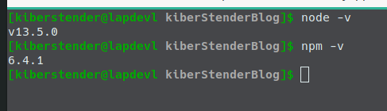
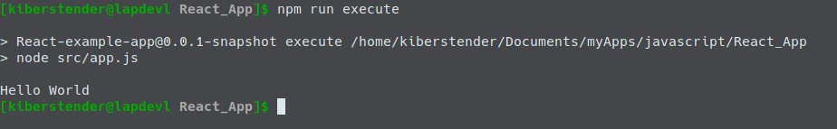
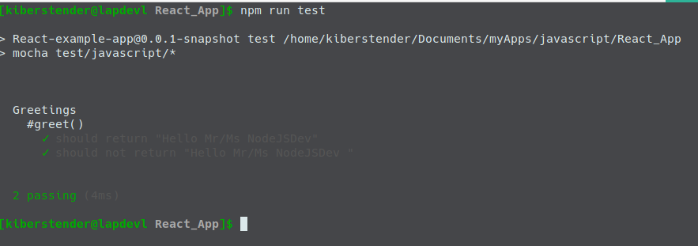
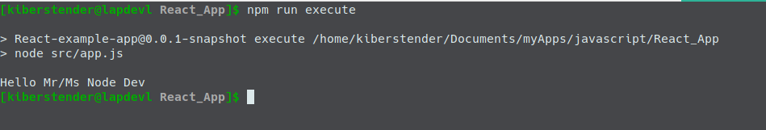

Introduction
Hello dear reader. Sometime ago I was studying how to add ReactJS to one application at work and I've come across this thing named WebJar that, if you, like me, come from Java world might know that this is just a Javascript or Css library packaged in a Java archive (a.k.a jar) so you can manage it using any sort of dependency manager like Maven, Gradle or SBT. You can see me using it here. This is a very nice feature, but it couples your backend to your frontend a bit, not to mention that when I tried to use something like Babel it was hard to configure.
So in this post I'm going to start a simple series of posts to do a simple ReactJS application using pure frontend stack with NodeJS, NPM, Webpack, Babel, Scss, Bootstrap and Live reload so you don't need to restart the application everytime you change a comma in your code. And by doing it without any coupling to backend you will be able to add this application to any fullstack application like SpringBoot, PlayFramework and others very easily.
NodeJS and NPM
First, in order to do all of these you need to understand what Node and NPM are, why we are going to need it and of course install it in your machine.
Roughly summarized (and not much reliable) story of Node
In the beggining there was Javascript in your browser, and it was good(Kind of). But Javascript unlike Java is a script language(duh!) and even though it has it's specification dictated by some company and published under the name of ECMA, each browser has it's own way to optmize or implement the specifications. Then in 2008 Google released a new engine to make Javascript interpretation faster, more reliable and stable: V8. While it was very nice in Google Chrome some guys realized that by making some modification to this engine they could use Javascript not only in your browser but in your computer as a general purpose interpreter, similar to Python. These guys named it NodeJS and then a huge dream started to come true: to work using one and only one language across backend and frontend.
As Maven was already popular in Java world they introduced some similar technology named NPM (Node Package Manager) that does everything Maven does for Java, like download your dependencies, put them in the 'classpath', package, deploy and even publish your application/library. The difference is that you have to install Maven separatedly from Java while NPM comes with Node.
In the making of this post NodeJs is in it's 13th version and it grew up a lot. Many libraries and features were added. And it became a crucial part of modern frontend even though Node is supposed to be 'The backend'. Because being Node an interpreter it is possible to not only write your Javascript or Css code, with Node you can create new languages(named transpilers) that will be later converted to Javascript like Coffeescript and Typescript or Css like Less and Sass. And going a bit further you can have something a little unthinkable before Node like Jade, a language to make HTML less verbose.
A little bit of NPM
As stated earlier, NPM stands for Node Package Manager and it works managing your application like Maven does. To use NPM you simply create a file in the root of your application named package.json with the following (minimal)structure:
{ "name": "MyAppName", //1 "version": "0.0.1-snapshot", //2 "description": "An example package.json", //3 "scripts": { //4 "run": "node app.js", "test": "call your test library" }, "dependencies": {//5 "a: "1.2.3", "b: "3.2.1" }, "devDependencies": { //6 "c: "1.2.3", "d: "3.2.1" } }
There are way more properties you can have in your package.json file, but these ones I'm showing are the most important ones. Let's say they are the ones you cannot ever forget to add. Now explaing each of them separately we have:
- name: This is the name of your application/library
- version: This is the version of your application/library
- description: This is where you put a brief description of what your application/library does. This is useful for others who use your applicationm/library and it is displayed in NPM website
- scripts: This is where you define the commands to build, build:prod, test, run or whatever you find necessary. Like Maven plugins where you tell maven how to run or compile your application
- dependencies: This is where you define a list of libraries your program dependends on, like React, Angular, MomentJS, etc
- devDependencies: This is where you define a list of dependencies that will not be packaged with your code. Imagine you are coding in Coffeescript or Typescript. You don't need to package Coffeescript or Typescript compilers to your code, because in the end everything becomes Javascript. But not only the compiler, for example, Uglyfy is a program that makes your code awful for anybody to read, once it runs it is not needed anymore, so you list it here instead of normal dependencies property.
After you create this file, NPM will be used mostly for running your application and 'installing' your dependencies. Installing here is between quotation because unlike Maven that you have to manually put all dependencies, NPM provide a nice syntax where you download the dependency package and at the same time add it to your package.json file if you do not have this dependency in your dependency list:
npm install dependency-a dependency-b
This syntax is to download the latest version of the dependency-a or dependency-b, if you want to specify the version you can:
npm install dependency@1.2.3 dependency-b@^1.0.0
This ^ between @ and the version means you want the latest version from 1.x.x series, so imagine that today the newest version is 1.1.0, but tomorrow you run this command the newest version is 1.2.0. This will update dependency-b version automatically when downloading it, so you don`t have to look everyday in case you are waiting for an update from 1.x.x series to fix a security bug or perfomance issues.
And to add dependencies to the property devDependencies you use a similar syntax. Simply add a --save-dev to your npm install command:
npm install --save-dev devDependency-a devDependency-b@^1.0.0 devDependency-c@3.0.0
And last but no least, to execute the scripts you created in scripts sections you simply call npm run-script script-name(or a short version npm run script-name)
npm run-script run #or npm run run npm run-script test #or npm run test
Installing Node and NPM
I'm not going to detail this process because you can find it very detailed on NodeJS website itself. Go to NodeJS page, choose the appropriate package for your Operating System. If you are using Windows you can simply double click the EXE file and follow the next~next~next~install pattern. If you are on Linux or Mac you can unpackage the tar.xz file you downloaded using any graphical or terminal application you prefer, put the contents in some directory of your choice and then create an Environment Variable named NODE_HOME variable pointing to /path/to/node/ and add it to your PATH environment variable:
...... NODE_HOME=/path/to/node PATH=$PATH:$NODE_HOME/bin
For more details please refer to this page or this one. As I said, NPM comes together, so once you get Node installed NPM will be installed too. Now simply test if everything is Ok:
If you prefer, many Linux OSes have package managers and Node is in their repositories so you can install like this:
sudo pacman -S nodejs #Arch based OSes sudo apt-get install nodejs #Debian based ...# and so on and so forth
Starting the project
Now that you understood the minimum about Node and how to get it running on your machine, let's start our React project as a simple CLI(Command Line Interface) app written in pure JS.
So first thing you have to do is create our app directory. Let's call it React_App:
Now we create our package.json. Very simple one:
{ "name": "React-example-app", "version": "0.0.1-snapshot", "description": "A simple React frontend application", "scripts": { "test": "echo \"Error: no tests were specified\" && exit 1" } }
Next step is to create a src directory and inside this directory create a app.js file in it and as content simply add 'console.log("Hello World")':
Ok now we have the minimum for our app. Edit your package.json to add a new script:
... "scripts": { ... "execute": "node src/app.js", ... } ...
PS: Whenever you see three dots ... it means: "Keep whatever comes before this" or if it comes after what we are adding/modifying, it means: "Keep whatever comes after these dots".
And execute it with the command I already taught you:
If you've seen something similar to the below image, congratulations, you just made your first Node CLI application.
Testing in Javascript
You know, programming is one thing but testing your code to guarantee it does what you really want it to do is a completely different thing, so how one test code in Javascript? In Node? One of the most famous libraries for testing that I know in Javascript is called Mocha. It acts like a simple JUnit if you came from Java World, so you can assert things are what you expect them to be.
To give a better example let's create a separate class named Greetings in a different package. First create javascript directory inside /src. Inside it create a package(directory) named greetings and finally inside it create a file named Greetings.js and put the given content:
class Greetings { constructor(name){ this.name = name; } greet(){ return `Hello Mr/Ms ${this.name}`; } } module.exports.Greetings = Greetings;
Now come back to the root of our app and create a directory named test, inside it create the same structure we have in our src:
PS: It is not mandatory to follow the same structure, it is just to make it easier to read.
Next step is to install Mocha in our dev-dependency list:
npm install --save-dev mocha@7.1.1
PS: To guarantee your code will run like mine, please install everything I will list in the same version as I am using.
Now we code our tests. I'll write only two. One for success and one for failure, very simple tests as it is just a demonstration. So inside test/javascript/greetings create our Greetings.test.js file and add the bellow code:
var assert = require('assert'); var greetings = require('../../../src/javascript/greetings/Greetings.js'); let greetDev = new greetings.Greetings("NodeJSDev"); describe('Greetings', function() { describe('#greet()', function() { it('should return "Hello Mr/Ms NodeJSDev"', function() { let expected = "Hello Mr/Ms NodeJSDev"; assert.equal(greetDev.greet(), expected); }); it('should not return "Hello Mr/Ms NodeJSDev "', function() { let expected = "Hello Mr/Ms NodeJSDev "; assert.notEqual(greetDev.greet(), expected); }); }); });
Next step is to modify test script in our package.json to execute Mocha for us:
{ ... "scripts": { ... "test": "mocha test/javascript/*" ... } }
Now next step: Run it!!!
If your test was succesfull like mine, nice, let's go to the last two steps. First change your src/app.js to 'import' our newly created and test Greetings class:
let greetings = require("./javascript/greetings/Greetings.js"); let greetDev = new greetings.Greetings("Node Dev"); console.log(greetDev.greet());
And last step is run it:
Conclusion
In this post we learned the basic of the basic about creating a Node JS app with simple tests. For now it is a simple CLI app but from here we can evolve it easily to a complex frontend app. In the next post we will learn about Webpack. If you came here but you don't speak english or even prefer portguese please check the Brazilian Portuguese version for this post